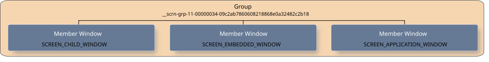
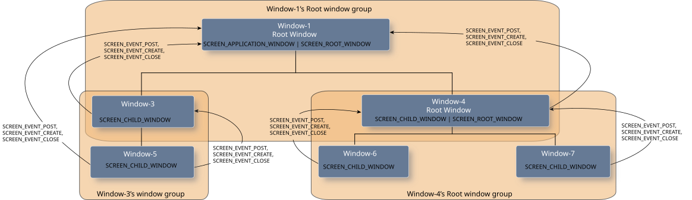

Window managers and parents have the responsibility of managing the other windows, which includes handling events from application and child windows accordingly.
Window managers and parents both receive events for the windows that they are responsible for. They are expected to act accordingly to these events. In most cases, events trigger updates to the visibility, the size, or the position of windows. Window managers and parents are given special privileges to change properties on windows within their group or hierarchy.
Window managers must be created within a SCREEN_WINDOW_MANAGER_CONTEXT context. This privileged context allows a context to control all windows in the system when new application windows are created or destroyed. This context also receives events when applications create new windows, when existing windows are destroyed, or when certain window properties are changed. Window managers must handle these events to properly manage layout and input.
The main functionalities of window managers are handling events that are associated with window objects and controlling how windows are shown on the display. Complex window managers may include managing additional functionalities such as input or displays.
Window managers must handle the following events from the windows that they are managing:
For more information on how window managers should handle these events, see the
Events
section below.
Parents don't need to be created within a privileged context. They receive events when child windows join and leave their group, or when certain window properties are changed. Parents must handle these events to properly manage layout.
Groups are used to organize, display, and control the windows in your application. They're a collection of windows without any implication of hierarchy.
A group is simply a set of windows that have some sort of association with each other (e.g., related content). Whoever creates the group is the owner of the group. There are certain properties that can be applied to a group, such as SCREEN_PROPERTY_IDLE_TIMEOUT. The group properties are applied to all the members of the group and you can use screen_set_group_property_*() and screen_get_group_property_*() functions to set and get these types of properties respectively.
To explicitly create a group, you must:
The name of the group should then be communicated to other functions, threads, or even processes that are responsible for creating the other windows that are to join this group. Any window can join this group as long as it has the associated group name. The owner is notified each time a window joins the group; a window handle is included in the event SCREEN_EVENT_CREATE.

A group member can query its SCREEN_PROPERTY_GROUP property to get either the name of, or the handle to, the group it has joined by calling the functions screen_get_group_property_cv() or screen_get_group_property_pv() respectively.
Root windows are consumers because they take their content from other windows that produce it. Screen does not take into account any children of root windows when it performs composition.
When a window is a root window, the window consumes content from all its children. It's the responsibility of the root window to manage and control the hierarchy and the update rates of its children. You can define any window type as a root by using the SCREEN_ROOT_WINDOW flag when you create the window:
screen_create_window_type(&screen_window, \
screen_context, \
(SCREEN_APPLICATION_WINDOW | SCREEN_ROOT_WINDOW) );
A root window has, at minimum, read access to all its children in the hierarchy. A root window receives:
The exception to the above is when a root window's children are consumers themselves.
The following sample root window hierarchy is used to describe the behavior of events that are triggered and received by windows:

Window-1 receives a SCREEN_EVENT_CREATE event when Window-5 joins the window group. However, Window-1 doesn't receive a SCREEN_EVENT_CREATE when Window-6 joins because Window-4 is a root window. The SCREEN_EVENT_CREATE event from Window-6 goes instead to Window-4 (similarly for Window-7).
| Window | Action | Recipient Window(s) |
|---|---|---|
| Window-3 | Calls screen_join_window_group() to join Window-1's root window group | Window-1 |
| Window-4 | Calls screen_join_window_group() to join Window-1's root window group | Window-1 |
| Window-5 | Calls screen_join_window_group() to join Window-3's window group | Window-3 and Window-1 |
| Window-6 | Calls screen_join_window_group() to join Window-4's window group | Window-4 |
| Window-7 | Calls screen_join_window_group() to join Window-4's window group | Window-4 |
The behavior for SCREEN_EVENT_CLOSE events is the same as for SCREEN_EVENT_CREATE events. For example:
| Window | Action | Recipient Window(s) |
|---|---|---|
| Window-3 | Calls screen_join_window_group() to leave Window-1's root window group | Window-1 |
| Window-4 | Calls screen_join_window_group() to leave Window-1's root window group | Window-1 |
| Window-5 | Calls screen_join_window_group() to leave Window-3's window group | Window-3 and Window-1 |
| Window-6 | Calls screen_join_window_group() to leave Window-4's window group | Window-4 |
| Window-7 | Calls screen_join_window_group() to leave Window-4's window group | Window-4 |
Windows that have a root window as their ancestor aren't composited by Screen.
Again referring to the example, Screen handles the composition of Window-1 only. All other windows have a root window as an ancestor. Window-1 is a consumer of the content of Window-3, Window-4, and Window 5. Window-4 consumes the content of Window-6 and Window-7. When child windows are ready to make their rendered content visible, they each must call screen_post_window(). When windows post for their first time, this call triggers a SCREEN_EVENT_POST event to their parent, and to their immediate ancestor root window. For example, when Window-6 or Window-7 posts, Window-4 receives a SCREEN_EVENT_POST event. Window-4 performs necessary operations to render and manage the layout of its children, and then in turn calls screen_post_window() when its content is ready. Window-1 receives the SCREEN_EVENT_POST event from Window-4. SCREEN_EVENT_POST events are sent only on the first post. Root windows must track subsequent updates of its children by using streams, or by using asynchronous notifications. In the example below, Window-1 tracks the updates from Window-3, Window-4, and Window-5, before it, in turn, can post.
| Window | Action | Recipient Window(s) |
|---|---|---|
| Window-3 | Calls screen_post_window() | Window-1 |
| Window-4 | Calls screen_post_window() | Window-1 |
| Window-5 | Calls screen_post_window() | Window-3 and Window-1 |
| Window-6 | Calls screen_post_window() | Window-4 |
| Window-7 | Calls screen_post_window() | Window-4 |
Root windows have privileges to set the following properties on its children:
Some counts of a window's metrics (SCREEN_PROPERTY_METRICS) are provided by its consumer.
A consumer can set the following window metric counts:
A window's status (SCREEN_PROPERTY_STATUS) is provided by its consumer.
A consumer can set the following window statuses:
Root windows are used in external compositors. See the "External composition" section for more details.
The event that's received by:
Application windows may be invisible until the window manager (or parent) makes them visible. A window may be invisible depending on your configuration in the graphics configuration file and on how you create the window.
For example, for both of the following scenarios, the window will be initially invisible:
...
begin class my_win_class
...
visible = false
...
end class
...
and you call
screen_create_window_from_class()
with class named "my_win_class"
...
begin class default
...
visible = false
...
end class
...
and you call
screen_create_window()
When a window manager (or parent) receives a SCREEN_EVENT_CREATE event, it needs to handle this event by determining whether or not to make this application window visible.
The event that a window manager, parent, or group owner may receive, when a window property has changed. Window managers receive SCREEN_EVENT_PROPERTY events for properties for all application windows that it's managing. It's up to the window manager to determine and track whether it needs to act on these events. Properties that window managers and parents have specific interest in when they change are:
This property indicates whether the window currently has keyboard focus. This is also of interest for the window manager (or parent) because when this property changes on one of the windows it's managing, the window manager may need to change the layout of the windows on the display. For example, if the window is gaining keyboard focus, the window manager (or parent) may need to make a virtual keyboard visible, or bring that window to the foreground of the display. If the window is losing keyboard focus, the window manager (or parent) may need to make a virtual keyboard invisible (hidden) and bring the window into the background.
This event's received by:
Managers are responsible for destroying the handles to the windows they are managing upon receipt of close events.
screen_window_t screen_win;
screen_get_event_property_pv(screen_ev, SCREEN_PROPERTY_WINDOW, (void **)&screen_win);
screen_destroy_window(screen_win);
The event that a window manager, parent, group owner, or root window receives when a window that's being managed, or in the group, first posts.
For example, when a parent receives a post event, it should:
Grab the posting window's ID and handle from the post event:
screen_event_t screen_ev;
screen_create_event(&screen_ev);
...
char window_group_name[64];
screen_window_t screen_win;
screen_get_event_property_pv(screen_ev,
SCREEN_PROPERTY_WINDOW,
(void **)&screen_win);
screen_get_window_property_cv(screen_win,
SCREEN_PROPERTY_ID,
sizeof(window_group_name),
window_group_name );
int visible = 1;
int pos[2], size[2];
...
/* Set the position of the child windows. */
pos[0] = pos[1] = 0;
screen_set_window_property_iv(screen_child_win1, SCREEN_PROPERTY_POSITION, pos);
screen_set_window_property_iv(screen_child_win2, SCREEN_PROPERTY_POSITION, pos);
...
/* Set sizes of the child windows. */
size[0] = 10;
size[1] = 10;
screen_set_window_property_iv(screen_child_win1, SCREEN_PROPERTY_SIZE, size);
size[0] = 32;
size[1] = 10;
screen_set_window_property_iv(screen_child_win2, SCREEN_PROPERTY_SIZE, size);
...
/* Set visibility of child windows */
screen_set_window_property_iv(screen_hg_win, SCREEN_PROPERTY_VISIBLE, &visible);
screen_set_window_property_iv(screen_bar_win, SCREEN_PROPERTY_VISIBLE, &visible);
screen_flush_context(screen_ctx, SCREEN_WAIT_IDLE);
Group owners and parents receive this event when none of the windows in their group has received input within the time specified by SCREEN_PROPERTY_IDLE_TIMEOUT. Receipt of the SCREEN_EVENT_IDLE event means that the parent's window group has transitioned either to or out of an idle state.
An example of an action a group owner might take is locking the device if there's been no input detected on any of its apps for a certain amount of time.